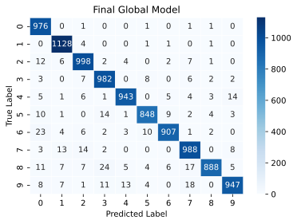

%config InlineBackend.figure_formats = ['svg']
"""
Utility functions and classes for Jupyter Notebooks lessons.
"""
from collections import OrderedDict
from typing import List, Tuple, Dict, Optional
from flwr.common import Metrics, NDArrays, Scalar
import torch
import torch.nn as nn
from torch.utils.data import Subset, DataLoader, random_split
import torch.optim as optim
from torchvision import datasets, transforms
import matplotlib.pyplot as plt
from sklearn.metrics import confusion_matrix
import seaborn as sns
import numpy as np
import logging
from flwr.common.logger import console_handler, log
from logging import INFO, ERROR
class InfoFilter(logging.Filter):
def filter(self, record):
return record.levelno == INFO
console_handler.setLevel(INFO)
console_handler.addFilter(InfoFilter())
# Route Flower logs to stdout so they render on this page.
import sys
console_handler.setStream(sys.stdout)
transform = transforms.Compose(
[transforms.ToTensor(), transforms.Normalize((0.5,), (0.5,))]
)
# To filter logging coming from the Simulation Engine
# so it's more readable in notebooks
from logging import ERROR
backend_setup = {"init_args": {"logging_level": ERROR, "log_to_driver": False}}
class SimpleModel(nn.Module):
def __init__(self):
super(SimpleModel, self).__init__()
self.fc = nn.Linear(784, 128)
self.relu = nn.ReLU()
self.out = nn.Linear(128, 10)
def forward(self, x):
x = torch.flatten(x, 1)
x = self.fc(x)
x = self.relu(x)
x = self.out(x)
return x
def train_model(model, train_set):
batch_size = 64
num_epochs = 10
train_loader = DataLoader(train_set, batch_size=batch_size, shuffle=True)
criterion = nn.CrossEntropyLoss()
optimizer = optim.SGD(model.parameters(), lr=0.01, momentum=0.9)
model.train()
for epoch in range(num_epochs):
running_loss = 0.0
for inputs, labels in train_loader:
optimizer.zero_grad()
outputs = model(inputs)
loss = criterion(outputs, labels)
loss.backward()
optimizer.step()
running_loss += loss.item()
def evaluate_model(model, test_set):
model.eval()
correct = 0
total = 0
total_loss = 0
test_loader = DataLoader(test_set, batch_size=64, shuffle=False)
criterion = nn.CrossEntropyLoss()
with torch.no_grad():
for inputs, labels in test_loader:
outputs = model(inputs)
_, predicted = torch.max(outputs.data, 1)
total += labels.size(0)
correct += (predicted == labels).sum().item()
loss = criterion(outputs, labels)
total_loss += loss.item()
accuracy = correct / total
average_loss = total_loss / len(test_loader)
return average_loss, accuracy
def include_digits(dataset, included_digits):
including_indices = [
idx for idx in range(len(dataset)) if dataset[idx][1] in included_digits
]
return torch.utils.data.Subset(dataset, including_indices)
def exclude_digits(dataset, excluded_digits):
including_indices = [
idx for idx in range(len(dataset)) if dataset[idx][1] not in excluded_digits
]
return torch.utils.data.Subset(dataset, including_indices)
def compute_confusion_matrix(model, testset):
# Initialize lists to store true labels and predicted labels
true_labels = []
predicted_labels = []
# Iterate over the test set to get predictions
for image, label in testset:
# Forward pass through the model to get predictions
output = model(image.unsqueeze(0)) # Add batch dimension
_, predicted = torch.max(output, 1)
# Append true and predicted labels to lists
true_labels.append(label)
predicted_labels.append(predicted.item())
# Convert lists to numpy arrays
true_labels = np.array(true_labels)
predicted_labels = np.array(predicted_labels)
# Compute confusion matrix
cm = confusion_matrix(true_labels, predicted_labels)
return cm
def plot_confusion_matrix(cm, title):
plt.figure(figsize=(6, 4))
sns.heatmap(cm, annot=True, cmap="Blues", fmt="d", linewidths=0.5)
plt.title(title)
plt.xlabel("Predicted Label")
plt.ylabel("True Label")
plt.show()How Federated Learning Works
machine-learning
federated-learning
flower
The server and client roles, the round-based federated training algorithm, federated averaging, and federating the MNIST experiment with Flower.
The previous page showed why training on distributed data matters and what missing data does to a model. This page covers how federated learning actually trains one model across many datasets, and how the three isolated MNIST models from that experiment become one collaborative model that classifies all ten digits. The model and data here are just an example to showcase federated learning in action. The same approach extends to most other models and datasets, and to different frameworks such as TensorFlow, JAX, Hugging Face Transformers, and Apple’s MLX.
Servers and Clients
A basic federated learning system has a server and clients. The server often does not have any data itself. It can have some data used to evaluate the global model, but in vanilla federated learning it has no training data. The clients are the ones that hold the actual training data.
If five hospitals collaborate on model training, there are five clients, one for every hospital. Each client runs inside one hospital’s environment and has access to the data of that particular hospital. If 100 million user devices hold data, there are 100 million clients, one on each device.
The role of the server is to coordinate the training across those clients. The role of each client is to do the actual training on its respective local dataset. Both the server and the clients keep their own copies of the model. The copy on the server is called the global model, and the copies on the clients are called the local models.
The picture below is the whole system on one page. Read it from the bottom up. Every client is a different kind of machine, and what makes it a client is not the hardware but the fact that it holds a dataset that stays where it is. Above each dataset sits that client’s local model, a copy of the same architecture everyone else is running. The server in the middle holds no data of its own, only the global model, and its job is to hand that model out and to merge what comes back.
Two details in that picture are easy to skim past and matter later. The dashed lines carry model parameters and nothing else, so no arrow in the diagram ever represents data leaving a client. And the model glyph appears six times, once on the server and once inside every client, because each participant genuinely holds its own copy rather than sharing one.
Review Questions
1. In vanilla federated learning, what data does the server hold, and what data do the clients hold?
TipAnswer
The clients hold all the training data, each client its own local dataset. The server holds no training data at all, though it may hold some data for evaluating the global model. The server coordinates, the clients train.
1. What is the difference between the global model and a local model?
TipAnswer
They are copies of the same architecture in different places. The global model lives on the server and represents the current aggregated state of training. A local model lives on a client and is the copy that client trains on its own data before sending its update back.
Federated Training Round by Round
How does training work across multiple clients? The process starts with the server initializing the global model parameters. The server then sends the parameters of the global model to the clients, say five of them, a tablet, a desktop, a mobile phone, a laptop, and a server machine. Those five clients train the model on their local data. They train only for a little while, not until full convergence, and often for just a single epoch on the local dataset.
After the local training, the clients send their improved models back to the server. The server now has five improved models, all with slightly different weights. But you want one model, not five. To get one model, the server aggregates the five models. There are different ways to aggregate, and one of the most common is to simply average the weights.
After the first aggregation you have a slightly improved version of the global model, and the steps repeat. The server sends the new model to the clients, the clients train on their local data, they send back improved models, and the server aggregates. Federated learning is an iterative process, and it repeats these so-called rounds over and over until convergence.
Here is a slightly more formal description of the algorithm.
- Initialization. The server initializes the global model.
- Communication round. For each round, the server sends the global model to the participating clients, and each client receives it.
- Client training and model update. Each participating client trains the received model on its local dataset, then sends its locally updated model back to the server.
- Model aggregation. The server aggregates the updated models received from all clients using an aggregation algorithm. A standard choice is federated averaging, a weighted average over all the received model updates, weighted by the number of training examples that went into training on each particular client.
- Convergence check. If the convergence criteria are met, the process ends. If not, it proceeds to the next communication round at step 2.
Steps 2 through 4 are the loop, and drawing them as a loop is the clearest way to see that no single pass through it is expected to finish the job.
Review Questions
1. Why do clients train for only a short time, often a single epoch, before sending their model back?
TipAnswer
Because the point of a round is a small local improvement that the server can aggregate, not a fully converged local model. The global model improves over many rounds of send, train, and aggregate rather than in one long local run.
1. How does federated averaging combine the client updates?
TipAnswer
It takes a weighted average of the model parameters received from the clients, weighted by the number of training examples each client trained on. A client that trained on more data therefore contributes more to the aggregated global model.
1. After one round, the server holds five slightly different trained models. What happens next and why?
TipAnswer
The server aggregates them into a single improved global model, for example by averaging the weights. The whole purpose of the system is one shared model, so the five local variants have to be merged before the next round can start from a common point.
Lab: Federating the MNIST Experiment
Recall the missing digit experiment, which produced three independent datasets and three independent models. The goal now is to connect those pieces and train one collaborative model across the three distributed datasets. The tooling is the open source Flower framework.
NoteLab Files Download
Everything this lab needs, next to your notebook.
- utils2.py (4 KB), the helper file with the model, training loop, and confusion matrix functions
- requirements.txt (1 KB), the package versions the course shipped
The MNIST dataset downloads automatically into MNIST_data/, exactly as in the previous lab, which also links a mirror of the raw archives.
WarningVersion Note
The course pinned Flower 1.10. This page runs on a current Flower release, and the lab code works unchanged. The only page-specific addition is one line in the helper that routes Flower’s log output to stdout so the log lines render here.
The helper file carries over SimpleModel, train_model, evaluate_model, the digit filters, and the confusion matrix functions from the previous lab, and adds the logging setup that keeps Flower’s output readable in a notebook, plus a backend_setup dict that quiets the simulation engine.
NoteHelper functions from utils2.py
Setting Up the Data
The Flower pieces come from four imports, the client side (ClientApp and NumPyClient), the common utilities, the server side (ServerApp and the federated averaging strategy), and the simulation runner.
from flwr.client import Client, ClientApp, NumPyClient
from flwr.common import ndarrays_to_parameters, Context
from flwr.server import ServerApp, ServerConfig
from flwr.server import ServerAppComponents
from flwr.server.strategy import FedAvg
from flwr.simulation import run_simulationThe three training partitions are rebuilt exactly as before, and rebuilding them identically is the point rather than a convenience. The same random seed recreates exactly the same three parts, with digits 1, 3, and 7 excluded from part one, digits 2, 5, and 8 excluded from part two, and digits 4, 6, and 9 excluded from part three. Holding the data fixed means that the only thing changing between the previous lab and this one is how the training is organized. Whatever improvement shows up at the end can therefore be credited to federated learning, and not to a luckier split of the data. The three parts go into a list, train_sets, so a client can later pick its own partition by index.
trainset = datasets.MNIST(
"./MNIST_data/", download=True, train=True, transform=transform
)
total_length = len(trainset)
split_size = total_length // 3
torch.manual_seed(42)
part1, part2, part3 = random_split(trainset, [split_size] * 3)
part1 = exclude_digits(part1, excluded_digits=[1, 3, 7])
part2 = exclude_digits(part2, excluded_digits=[2, 5, 8])
part3 = exclude_digits(part3, excluded_digits=[4, 6, 9])
train_sets = [part1, part2, part3]The test set and the three held-out subsets are the same as in the previous lab as well, for the same reason. Scoring both experiments on exactly the same questions is what makes the two sets of numbers comparable, and the three subsets are the questions that matter most here, since those are the digits the individual models scored zero on.
testset = datasets.MNIST(
"./MNIST_data/", download=True, train=False, transform=transform
)
print("Number of examples in `testset`:", len(testset))
testset_137 = include_digits(testset, [1, 3, 7])
testset_258 = include_digits(testset, [2, 5, 8])
testset_469 = include_digits(testset, [4, 6, 9])Number of examples in `testset`: 10000Exchanging Model Parameters
Federated learning needs model parameters to move between server and clients. When a client receives parameters from the server, it must load them into its local model, and when it finishes training, it must extract the latest parameters and send them back. Two small functions handle this. get_weights iterates over the model’s state_dict, converts each entry into a NumPy ndarray, and returns the list of arrays. It is used after local training to hand the updated weights back. set_weights goes the other direction, writing a list of arrays into the state_dict. It is used before local training to load the weights received from the server. Both functions are model specific, so a different model may need them adjusted.
# Sets the parameters of the model
def set_weights(net, parameters):
params_dict = zip(net.state_dict().keys(), parameters)
state_dict = OrderedDict(
{k: torch.tensor(v) for k, v in params_dict}
)
net.load_state_dict(state_dict, strict=True)
# Retrieves the parameters from the model
def get_weights(net):
ndarrays = [
val.cpu().numpy() for _, val in net.state_dict().items()
]
return ndarraysClient Side
The client side wraps the existing training and evaluation pipeline so Flower can orchestrate it. The FlowerClient class, subclassing NumPyClient, is constructed from three things, the model, the training dataset of one particular client, and the test dataset of that client. It defines two methods. fit trains the model using parameters provided by the server and the local training data, and evaluate measures performance using provided parameters and the local test data.
class FlowerClient(NumPyClient):
def __init__(self, net, trainset, testset):
self.net = net
self.trainset = trainset
self.testset = testset
# Train the model
def fit(self, parameters, config):
set_weights(self.net, parameters)
train_model(self.net, self.trainset)
return get_weights(self.net), len(self.trainset), {}
# Test the model
def evaluate(self, parameters: NDArrays, config: Dict[str, Scalar]):
set_weights(self.net, parameters)
loss, accuracy = evaluate_model(self.net, self.testset)
return loss, len(self.testset), {"accuracy": accuracy}Flower creates client objects on demand through a client_fn function. This matters for resource utilization, because federated training can easily span hundreds of clients, and when simulating them on a single machine you want objects created only when needed and discarded afterwards. Flower calls client_fn whenever it needs a particular client to run fit or evaluate, and the partition ID in the context tells the function which client is being created, so it can pick that client’s training data from train_sets.
# Client function
def client_fn(context: Context) -> Client:
net = SimpleModel()
partition_id = int(context.node_config["partition-id"])
client_train = train_sets[int(partition_id)]
client_test = testset
return FlowerClient(net, client_train, client_test).to_client()Finally, a ClientApp is created from client_fn, and it is the entry point for everything happening on the client side.
client = ClientApp(client_fn)Server Side
The server needs a counterpart to aggregate the updated models and to track how the global model is doing. The evaluate function takes the current round number, the latest global model parameters as a list of arrays, and a config dict. It loads the parameters with set_weights and evaluates the model on the full MNIST test set and on the three subsets of held-out digits, logging the accuracy for each round so you can watch it evolve. In the final round it also computes the confusion matrix for the global model.
def evaluate(server_round, parameters, config):
net = SimpleModel()
set_weights(net, parameters)
_, accuracy = evaluate_model(net, testset)
_, accuracy137 = evaluate_model(net, testset_137)
_, accuracy258 = evaluate_model(net, testset_258)
_, accuracy469 = evaluate_model(net, testset_469)
log(INFO, "test accuracy on all digits: %.4f", accuracy)
log(INFO, "test accuracy on [1,3,7]: %.4f", accuracy137)
log(INFO, "test accuracy on [2,5,8]: %.4f", accuracy258)
log(INFO, "test accuracy on [4,6,9]: %.4f", accuracy469)
if server_round == 3:
cm = compute_confusion_matrix(net, testset)
plot_confusion_matrix(cm, "Final Global Model")Aggregation is handled by a strategy, Flower’s abstraction for a server side federated learning algorithm. Federated averaging is one strategy, and many others exist, such as FedAdam, FedMedian, and q-FedAvg, most available built in. Plain federated averaging is initialized with the fraction of available clients selected for training, the fraction selected for evaluation, the initial model parameters, and the server side evaluation function. The server_fn bundles the strategy with a three-round configuration.
net = SimpleModel()
params = ndarrays_to_parameters(get_weights(net))
def server_fn(context: Context):
strategy = FedAvg(
fraction_fit=1.0,
fraction_evaluate=0.0,
initial_parameters=params,
evaluate_fn=evaluate,
)
config=ServerConfig(num_rounds=3)
return ServerAppComponents(
strategy=strategy,
config=config,
)A ServerApp is then created from it.
server = ServerApp(server_fn=server_fn)Running the Simulation
A real federated system runs distributed across separate servers or devices. During development you simulate it on one machine with run_simulation, passing the server app, the client app, and the number of clients to simulate. Flower calls clients super nodes to emphasize their importance. Compared to a traditional client-server setup with a powerful server and thin clients, the clients in federated learning are the real stars of the show, since they hold the valuable data and the compute that performs training.
# Initiate the simulation passing the server and client apps
# Specify the number of super nodes that will be selected on every round
run_simulation(
server_app=server,
client_app=client,
num_supernodes=3,
backend_config=backend_setup,
)INFO : Starting Flower ServerApp, config: num_rounds=3, no round_timeout INFO : INFO : [INIT] INFO : Using initial global parameters provided by strategy INFO : Starting evaluation of initial global parameters INFO : test accuracy on all digits: 0.1267 INFO : test accuracy on [1,3,7]: 0.2275 INFO : test accuracy on [2,5,8]: 0.1201 INFO : test accuracy on [4,6,9]: 0.0380 INFO : Evaluation returned no results (`None`) INFO : INFO : [ROUND 1] INFO : configure_fit: strategy sampled 3 clients (out of 3)
INFO : aggregate_fit: received 3 results and 0 failures INFO : test accuracy on all digits: 0.8341 INFO : test accuracy on [1,3,7]: 0.9493 INFO : test accuracy on [2,5,8]: 0.7640 INFO : test accuracy on [4,6,9]: 0.7240 INFO : configure_evaluate: no clients selected, skipping evaluation INFO : INFO : [ROUND 2] INFO : configure_fit: strategy sampled 3 clients (out of 3) INFO : aggregate_fit: received 3 results and 0 failures INFO : test accuracy on all digits: 0.9500 INFO : test accuracy on [1,3,7]: 0.9679 INFO : test accuracy on [2,5,8]: 0.9165 INFO : test accuracy on [4,6,9]: 0.9485 INFO : configure_evaluate: no clients selected, skipping evaluation INFO : INFO : [ROUND 3] INFO : configure_fit: strategy sampled 3 clients (out of 3) INFO : aggregate_fit: received 3 results and 0 failures INFO : test accuracy on all digits: 0.9621 INFO : test accuracy on [1,3,7]: 0.9723 INFO : test accuracy on [2,5,8]: 0.9520 INFO : test accuracy on [4,6,9]: 0.9498

INFO : configure_evaluate: no clients selected, skipping evaluation INFO : INFO : [SUMMARY] INFO : Run finished 3 round(s) in 43.31s INFO :
In each of the three rounds, the strategy samples all three available clients, sends them the global model parameters, asks them to train locally, receives three results and zero failures, and logs a fresh evaluation of the newly aggregated global model.
Results
The three individually trained models from the earlier experiment reached roughly 65 to 70 percent accuracy, and 0 percent on their missing digits. The federated global model jumps to roughly 96 percent accuracy on the full test set. Even more interesting, on the specific held-out subsets the accuracy jumps from 0 percent to roughly 94 to 97 percent. The confusion matrix shows a very different picture as well. There are no all-zero columns anymore, and the model classifies all ten digits, even digits missing entirely from one of the datasets. No client ever saw the missing digits of another client, and no raw data moved anywhere. The knowledge traveled through the aggregated parameters.
To summarize the mechanics, clients with data train the model, and the server, often without data, aggregates model updates. Client side training, evaluation, or analytics are defined via the Flower ClientApp, and server side configuration and aggregation via the ServerApp. During development you usually simulate the system on a single machine, and for production you deploy it on the different machines that hold the individual datasets.
Review Questions
1. Each individual model scored 0 percent on its missing digits, yet the federated model scores 94 to 96 percent on those same subsets without any data changing hands. How?
TipAnswer
Every digit missing from one partition is present in another. During each round, each client improves the shared model on its own digits, and aggregation merges those improvements into one global model. The knowledge about digits 1, 3, and 7 reaches the first client’s model through the averaged parameters contributed by the other clients, not through their data.
1. What do get_weights and set_weights do, and when is each used on a client?
TipAnswer
They translate between the PyTorch state_dict and a list of NumPy arrays that can travel over the network. set_weights runs before local training, loading the parameters just received from the server into the local model. get_weights runs after local training, extracting the updated parameters to send back.
1. Why does Flower create client objects on demand through client_fn instead of keeping all clients alive?
TipAnswer
Resource utilization. A federation can span hundreds of clients, and a simulation runs them all on one machine. Creating a client object only when Flower needs it to run fit or evaluate, and discarding it afterwards, keeps memory bounded no matter how many clients the federation has.
1. What is a strategy in Flower, and where does federated averaging fit?
TipAnswer
A strategy is the abstraction that implements the server side federated learning algorithm, deciding how clients are sampled and how their updates are aggregated. Federated averaging is one built-in strategy among many, such as FedAdam, FedMedian, and q-FedAvg.